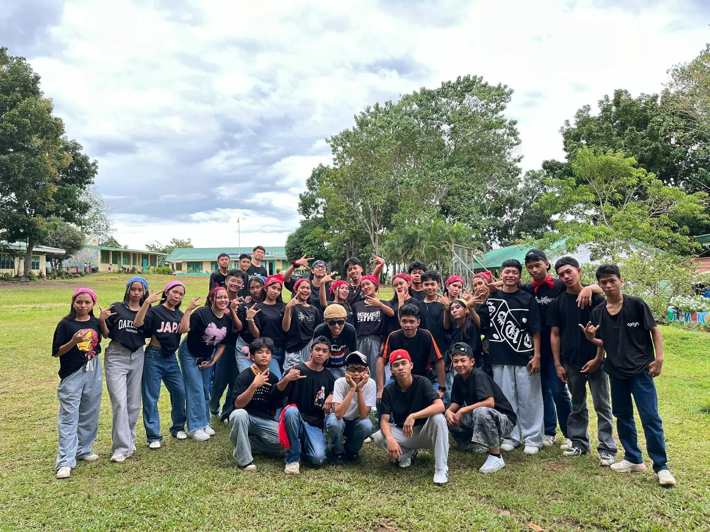
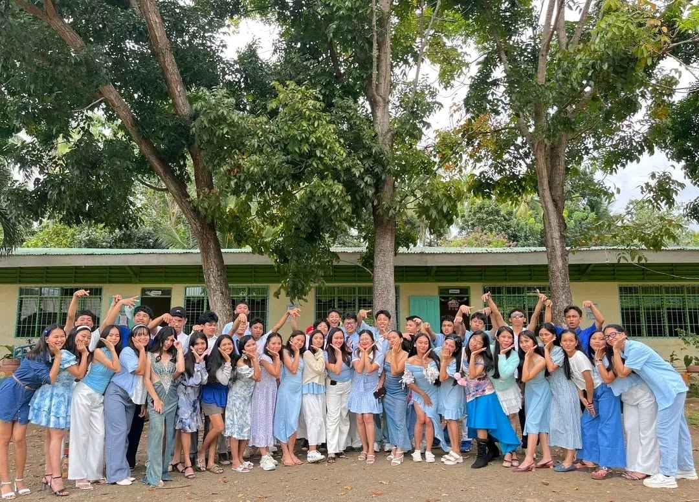
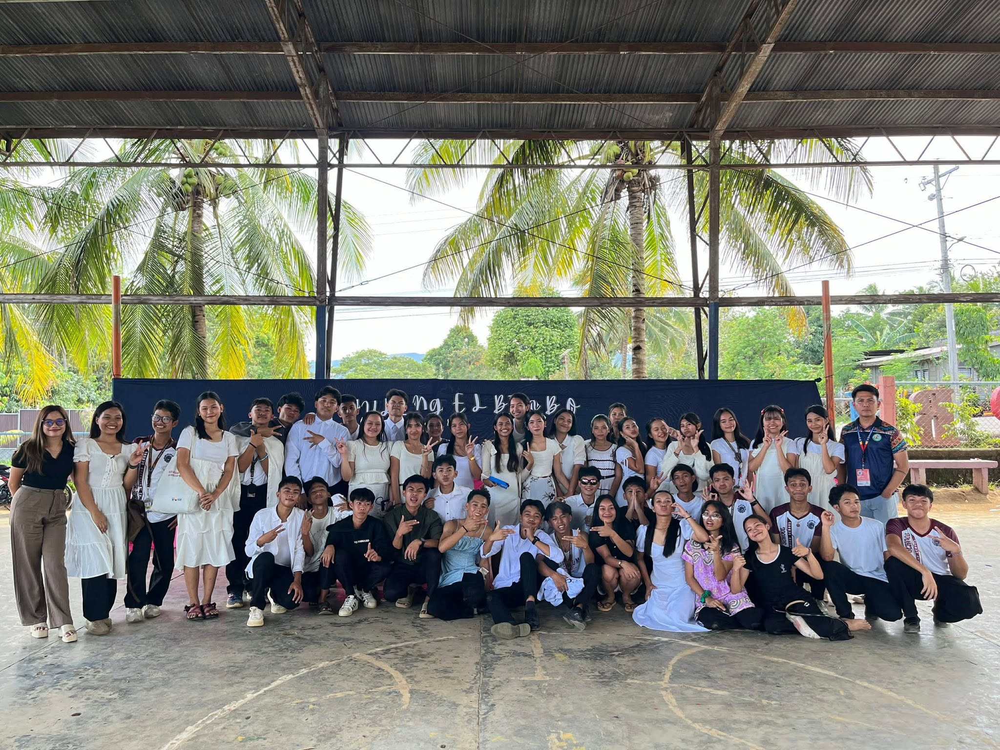
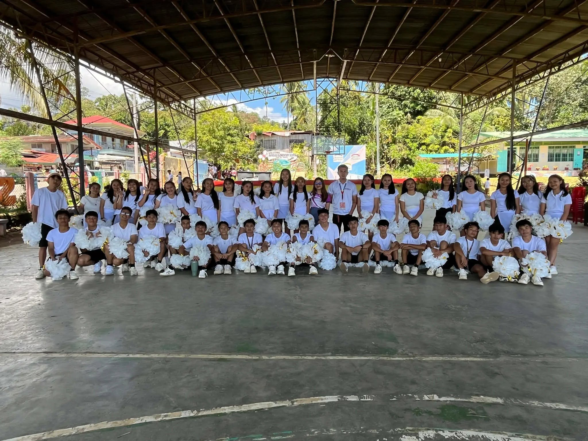

My Favorite Pictures
My favorite memories from old school. Each photo captures moments of friendship, fun, and celebration I'll never forget!
1. Hip Hop Dance Performance

An intense and energetic performance! We put in so much work and it totally paid off.
2. Christmas Party Picture Taking

Everyone together celebrating and spreading holiday cheer. Such happy times with great friends!
3. Huling El Bimbo Role Play

Our first theatrical performance as a class! Everyone brought their A-game and it was incredible.
4. Cheerdance Performance

Lit performance with perfect energy and coordination. We totally nailed it!
5. School Yearbook Picture Taking

Our class photo frozen in time. This reminds me of all the memories, inside jokes, and friendships!